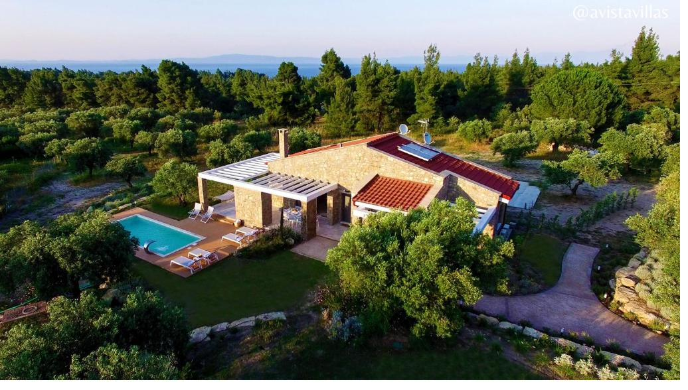
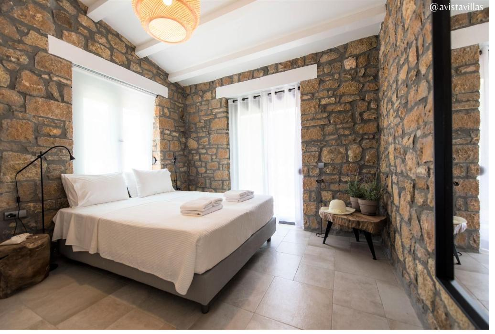

One flagship, two sisters



Avista Private Resort
Set in a private clearing of 2,500 square metres, framed by pines and looking toward the distant Aegean. Stone walls, a generous pergola, a pool with a quiet waterfall. Handcrafted masonry with clean contemporary lines inside. Designed for larger families, groups, or anyone who wants complete seclusion with the polish of a resort suite.


Avista Villa
A classic Greek family home, reimagined. Double-height ceilings with wicker and dark wood, terracotta floors that hold the cool of the morning. A sleek pool wrapped in olive trees, lit beautifully for the evenings. The villa that feels like visiting Greek family you didn't know you had — with everything you'd want from a private pool home.


Avista Superb Villa
Sharing the same warm Greek architecture as the Avista Villa — terracotta tile, white-washed walls, a bougainvillea-covered terrace and the same garden quality. Without a private pool, this villa is a more accessible choice for families who'd rather walk to the beach, or for couples and smaller groups who don't need a pool to make the week feel like Greece.
Two architectural styles
The collection has range, but it is not three random villas. Two architectural worlds, with the Private Resort standing alone, and the Villa and Superb Villa as warm sister properties.
Contemporary Stone
The Avista Private Resort. Modern handcrafted masonry, clean horizontal lines, a generous pergola and a pool with a waterfall feature. Designed in 2018, photographed in detail. The villa to lead with in marketing — the architectural piece de résistance of the collection.
Traditional Greek
The Avista Villa and the Avista Superb Villa. Same architectural language — terracotta floors, wood shutters, double-height ceilings, bougainvillea, olive grove. The Villa has a private pool; the Superb Villa does not. Together they offer two price points and two sizes inside the same warm Greek aesthetic.
How to refer to each villa, consistently
Short name in running copy: the Private Resort or the Resort. Full name on first mention, in headlines, and on every booking confirmation. Matches the OTA name exactly.
Short name: the Villa. Always with capital V to distinguish from the generic word. Matches the OTA name exactly.
Short name: the Superb Villa. The word "superb" is the OTA convention — keep it for SEO and brand consistency, even though the brand voice rarely uses superlatives elsewhere.